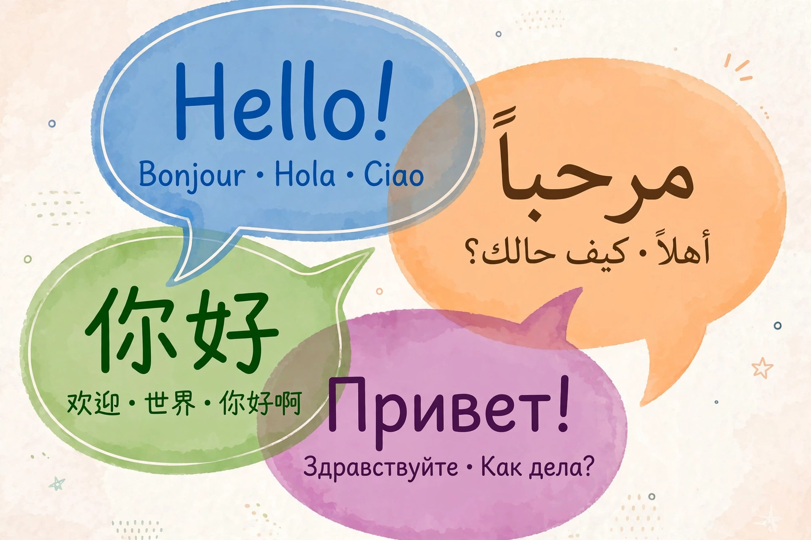

A loanword (also spelled loan word) is a word at least partly assimilated from one language (the donor language) into another language (the recipient language). This is in contrast to cognates, which are words in two or more languages that are similar because they share an etymological origin, and calques, which involve translation of a word's components rather than borrowing its form. The word "loanword" is itself a calque of the German Lehnwort.
Loanwords enter a language through cultural contact: trade, conquest, migration, religion, technology and popular culture. Borrowed words are usually adapted to the phonology and morphology of the recipient language — for example, Japanese adapts English words to its syllable structure (sutoraiku from "strike"). Borrowing can fill a lexical gap (names for new things) or occur for prestige, sometimes displacing native synonyms.
| Donor language | Examples |
|---|---|
| Old Norse | sky, egg, knife, window, they |
| French | government, beauty, fashion, cuisine, ballet |
| Latin / Greek | biology, data, theatre, democracy |
| Arabic | algebra, coffee, sugar, algorithm |
| Hindi / Sanskrit | jungle, shampoo, pyjamas, guru |
| Japanese | tsunami, karaoke, emoji, tycoon |
| German | kindergarten, zeitgeist, schadenfreude, doppelgänger |
| Spanish | canyon, mosquito, tornado, plaza |
| Nahuatl | chocolate, tomato, avocado, coyote |
A calque or loan translation translates the donor word piece by piece (English "skyscraper" calqued into many languages). A semantic loan borrows a meaning rather than a form. "Loan blends" mix borrowed and native elements. Linguists distinguish established loanwords, fully nativised, from foreignisms still felt as alien. Purist movements in some languages have tried to replace loanwords with native coinages, with mixed success.